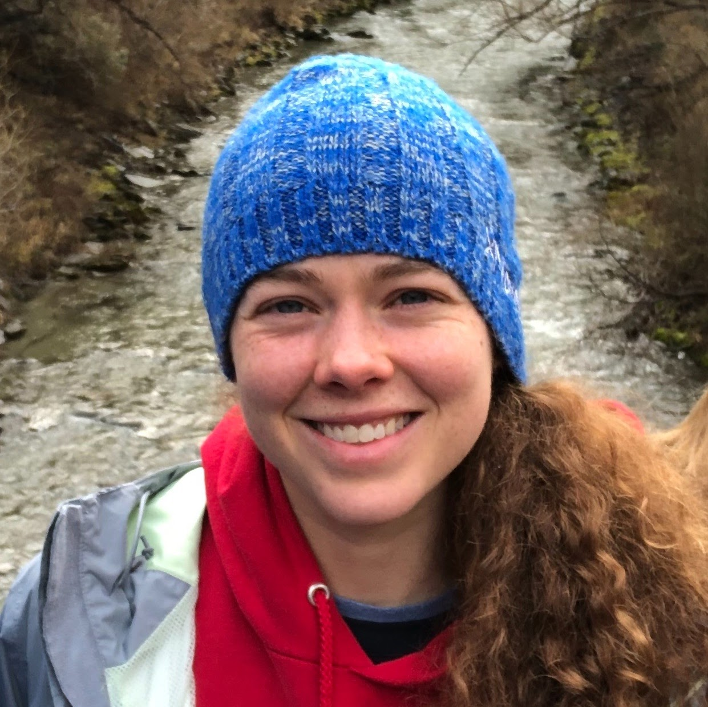

Baker House Baker Home

Heads of House
Introducing the Heads of House (HoH) for Baker House, Malvina Lampietti and Prof. John Fernandez ('85) and their children Lorenzo and Vita. John is a professor in Course 4 (Architecture) and Director of ESI – the Environmental Solutions Initiative. Malvina is a principal of Lampietti Fernández Architects, which she co-founded with John in 1997. Malvina is an avid tennis player and John is a classical pianist. Our vizsla, Louie, loves to greet students. We look forward to meeting those of you who are new to Baker and sharing an excellent upcoming academic year!
Email Heads of House

Area Director
Hi, I'm Rachael Beaumont, the Area Director to Baker House! I was born and raised in Lawrence, KS where I got my undergraduate degree in Theater Education at the University of Kansas before moving to Lincoln, NE to get my Masters in Student Affairs! I've spent some time in the Midwest working before coming to MIT where I'm excited to share in the experiences and the traditions with every student here! I'm a regular at the gym so if you see me say hi! I love trying out new recipes, exploring the city, watching baking shows, and can never go wrong with a good board game! I hope you'll swing by for a chat or a cup of coffee!
GRAs
A Graduate Resident Advisor (GRA) is a graduate student at MIT who lives in the undergraduate community and serves as mentor, advocate, and resource for the students. Baker has 10 GRAs including a Leadership GRA who helps with the Baker Leaders program. While the GRAs focus on their individual areas on floors, they are available to the whole community as a resource. Meet our Baker GRAs!
One West
Hi! I’m a PhD student in the Department of Linguistics and Philosophy. I grew up in Argentina and earned my B.A. in Philosophy from Princeton University. Before starting my PhD, I worked at the Princeton University Investment Company for two years. In my free time, I enjoy running, especially with the Boston Hares!
One West
Hi! I’m Jenny, and I am a PhD student in the Economics department, interested in topics of labor, public, and behavioral economics. I grew up in Baton Rouge, LA, went to college in Chicago, and worked in San Francisco for several years before coming to MIT for grad school! I love hot chocolate, being outdoors, walking and biking around Cambridge, playing competitive ultimate frisbee, and trying new arts and crafts. And I’m Judah! I am a software engineer for a start up in the Bay area meaning I work remotely full time! I grew up in New York City before going to school in Chicago where I met Jenny. I enjoy biking around the city of Cambridge, finding new spots in the city where I can work, trying out new recipes and playing ultimate frisbee! Why Baker First West is the best: One WEST is obviously the BEST because we have that first-year excited energy, enthusiasm, and passion!
Two West
Hi! I am a PhD student in Brain and Cognitive Sciences (Course 9). I use big data and cell models to study the genetic basis of Alzheimer’s disease. I grew up in Pennsylvania, Washington, D.C. and Ankara, Turkey before attending Pomona College in California. Outside of lab, I love running and dancing. I care a lot about making undergraduate STEM education inclusive and accessible. Stop by one of our study breaks to learn a fun fact about the brain! Why Baker Second West is the best: 2 West is the best because we Try to uplift each-other, we Work on building community, and we Open our minds, hands and hearts!
One and Two East
Hi! I'm Kota, a PhD student in Aeronautics and Astronautics. I'm originally from Japan where I did my undergrad studies in Aerospace Engineering. It's been three years since I moved to Boston, and I'm loving it here! In my free time, I usually play soccer, hit the gym, or go for a run. I also love to cook up some good food and spend my evenings getting lost in a book. Gardening is another thing I'm into – I enjoy watching my plants grow and taking care of them. I can't wait to get to know all of you! Why Baker First/Second East is the best: Because we host the best study breaks ever!!

Three West
Haley completed her undergrad in Course 20 at MIT and is in the Course 2 Graduate Program. She is in the Cima Lab and her research interests lie at the intersection of life and technology, with a focus on devices with clinical impact. She is originally from Titusville, FL. Haley can frequently be found rowing on or running along the Charles. Other extracurriculars include jamming out on the ukulele, mucking around in makerspaces, and exploring.
Three East
Hi! I’m a PhD Candidate in the MIT-Harvard Medical School HST program studying bioastronautics. I grew up in Michigan and did my undergraduate degrees in physics and biomedical engineering at Duquesne University, where I competed for four years as a swimmer in the A10 Conference. I like to hike, fly planes, scuba dive, and compete on MIT’s club gymnastics team in my spare time. Why Baker Fourth West is the best: Floor 4 is out of this world, because we all bring our experiences and expertise to learn together and make a unique living environment.
Three and Four East
Hi! I'm Elijah, and I'm a PhD student in Civil and Environmental Engineering, studying methane emission mitigation for climate change. I grew up in Connecticut, studied chemical engineering at Tufts, and worked at Beyond Meat in LA for a while before coming to MIT. I love reading, hiking, surfing, playing soccer, and making things! Why Baker Third/Fourth East is the best: Because we are committed to building a vibrant, welcoming community, and as a past GRA once said, "We have all of the views of the 6th floor without any of the altitude sickness!"
Five West
Hello! My name is Leo, and I am a PhD student in the AeroAstro department. As a member of STAR Lab, I research intersatellite optical communications links. One of my favorite things of living in the northeast is having season-dependent hobbies. During warmer seasons I love to sail and hike! When the temperatures drop, I drive up north and take advantage of the beautiful mountains in Vermont or New Hampshire to do some back country skiing. Why Baker Fifth West is the best: In 5West you’ll never be a guest! Here we’ll create a community where you’ll feel at home.
Six West
Hi! I’m a PhD student in Economics, and I do work in labor, political, and behavioral economics (come talk to me about all things econ!). I grew up in Hershey, PA and did my undergrad at MIT (2019, 10B and 14-2), where I lived in French House. Before returning to MIT for grad school, I spent two years working. In my free time, I enjoy biking at a leisurely pace, trying hot sauces, cooking, playing violin, and listening to pop trash. I can’t wait to meet you! ^.^ Why Baker Sixth West is the best: 6 West is the best because we make it a warm and welcoming home for everyone.